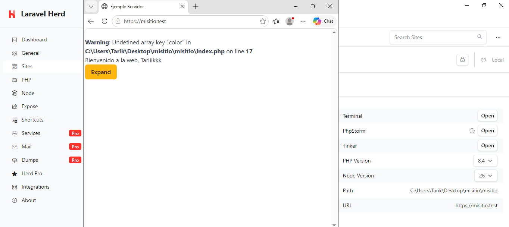

5. Herd y HTTPS
En este apartado se configura el acceso al proyecto mediante Herd utilizando HTTPS.
Herd permite asignar un dominio local al proyecto para poder acceder a él desde el navegador.
Configuración del dominio local
Se configura el proyecto para poder acceder a él mediante un dominio local.
Una vez configurado, se comprueba que el proyecto está disponible desde el navegador.
Configuración de HTTPS
Herd permite utilizar HTTPS en los dominios locales mediante un certificado de desarrollo.
Se activa HTTPS para el proyecto y se comprueba que el sitio puede abrirse correctamente utilizando el protocolo seguro.
La dirección utilizada para acceder al proyecto es:
https://misitio.test
Resultado
La siguiente captura muestra el proyecto funcionando mediante Herd y accediendo a través de una conexión HTTPS:
